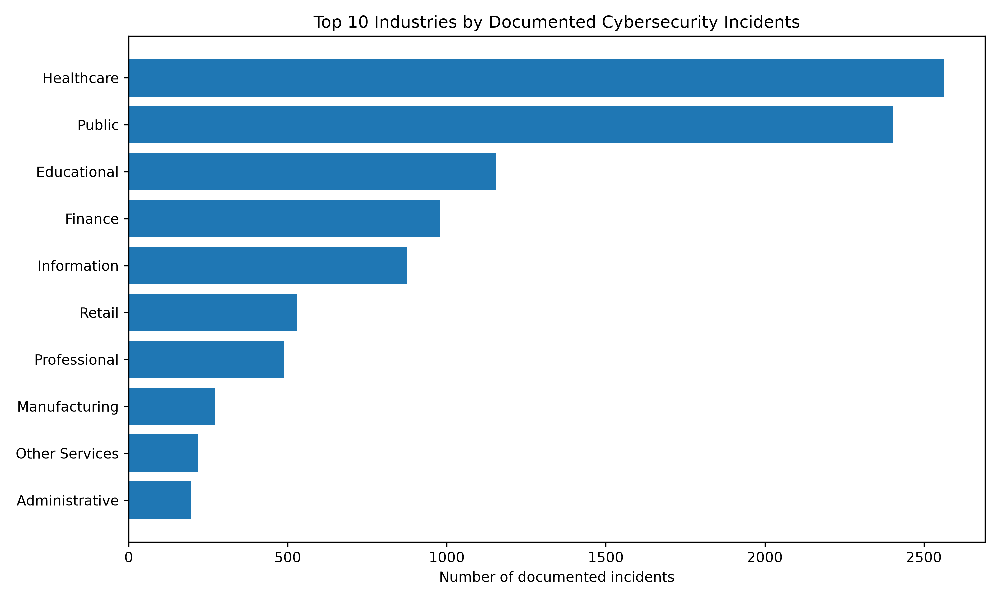

Data Analysis
Cybersecurity Incident Analysis
Python · SQL · SQLite · Pandas · Matplotlib
Analyzed 10,596 real-world cybersecurity incidents from the VERIS Community Database to explore patterns in affected industries, attack categories, and incident impacts.
- Cleaned a dataset containing 2,683 columns and selected 12 relevant fields for analysis.
- Loaded the cleaned data into SQLite and used SQL queries to investigate incident trends.
- Identified healthcare as the industry with the most documented incidents (2,564).
- Created four charts to communicate findings across industries, attack types, and impacts.
